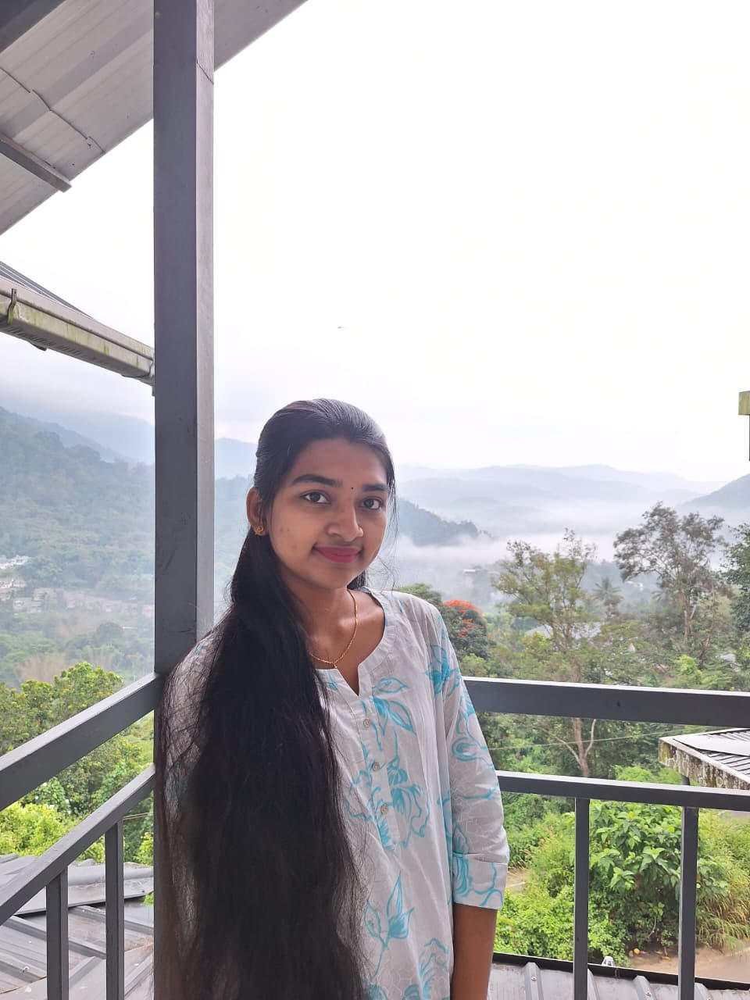

Email: akshithashetty69@gmail.com
Phone: +91 8618985167
Location: Puttur, Karnataka
Enthusiastic and hardworking Computer Science student with basic knowledge of programming and web development. Seeking an internship opportunity to improve technical skills, gain practical experience and contribute to real-world software projects.
| Qualification | Institution | Year |
|---|---|---|
| B.E. CSE | VCET Puttur | 2024-2028 |
| PUC | Vivekananda Pre-University College, Puttur | 2024 |
| SSLC | Vittal Jaycees English Medium School, Vittal | 2022 |
Created a simple student details website using HTML to display student information such as name, USN, course, contact details, and academic details. This project helped me understand HTML structure, web page design, tables, forms, and basic web development concepts.
The Online Voting System is a web-based application that uses face recognition to verify voters and prevent duplicate voting using OpenCV, Flask, and SQLite to provide a secure, easy, and efficient online voting process.
Developing a web application to identify fake job postings using Natural Language Processing and Random Forest Machine Learning algorithms.
English, Kannada, Hindi, Tulu